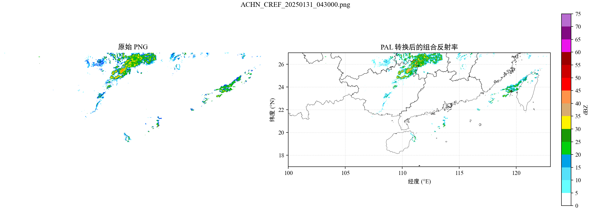

评分公式
客观评估口径
TS 评分
TS = H / (H + M + F)
BIAS 评分
BIAS = (H + F) / (H + M)
SSIM 评分
SSIM = l(x,y) * c(x,y) * s(x,y)
阈值综合
S = S20 * 30% + S35 * 40% + S45 * 30%
总评分
S_total = S0-1h * 30% + S1-2h * 50% + S2-3h * 20%
| 模型 | TS 总评分 | BIAS 总评分 | SSIM 总评分 | 综合评分 |
|---|
模型排名
| 排名 | 模型 | TS | BIAS | SSIM | 综合分 |
|---|
经典个例
2026-07-06 00:00单帧

3小时预报